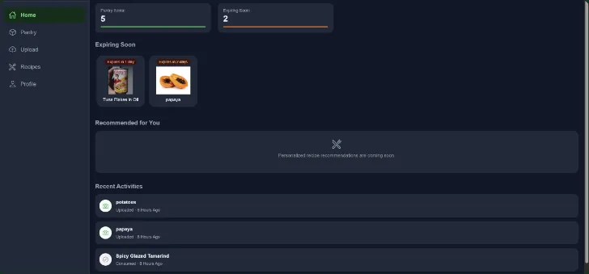
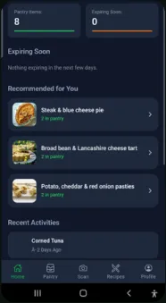

01 / Scan
Read beyond the label.
Capture a product label with your phone or upload a photo. Explore ingredients and potential allergen or Halal-related concerns matched to your dietary profile.
Scan food labels, understand your ingredients, and keep your pantry organized. One smarter routine, on your browser and in your pocket.
Get startedOne account. Your phone. Your browser.
A clear view of your pantry, expiration reminders, and recipes inspired by what you already have.

Capture a product label with your phone or upload a photo. Explore ingredients and potential allergen or Halal-related concerns matched to your dietary profile.
Organize food by fridge, freezer, or cupboard. Record quantities and dates, receive expiration reminders, and archive consumed items.
Discover recipe suggestions based on your pantry and dietary preferences. Save favorites and keep a made-recipe history.
Take your pantry with you. Scan on the go, review your food, and plan your next meal from the OmniScan mobile app.

Set allergen sensitivities and Halal preferences in your profile. Review dietary alerts, customize reminders, and manage your display preferences.
OmniScan is a decision-support tool, not a guarantee of allergen safety or Halal certification. Always verify packaging, ingredients, and certification with trusted sources before consumption.